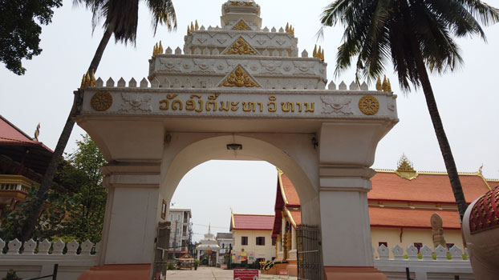
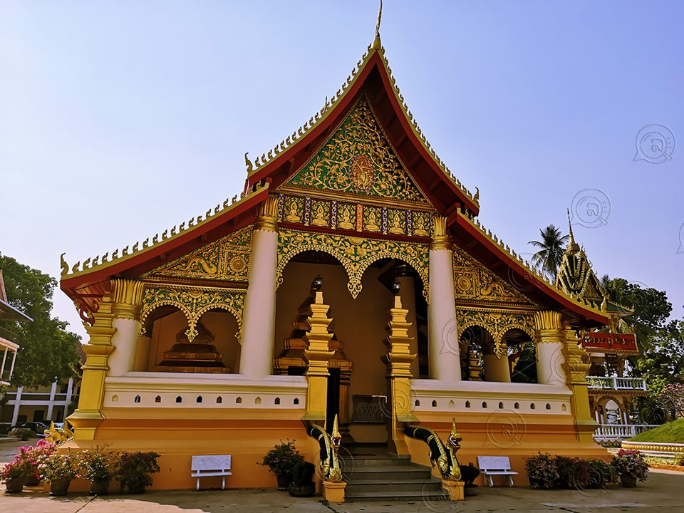
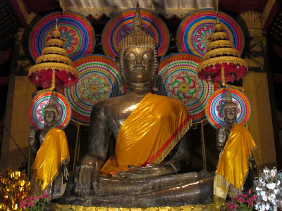

ຫໍພະແກ້ວ (Hor Phakeo)
ວັດອົງຕື້ມະຫາວິຫານ ເປັນ 1 ໃນຈຳນວນຫລາຍໆວັດທີ່ເກົ່າແກ່ທີ່ສຸດ, ໃນນະຄອນຫລວງວຽງຈັນ ແລະ ມີຄວາມຫມາຍຄວາມສຳຄັນທາງບູຮານສະຖານ ແລະ ປະຫວັດສາດ ເປັນວັດທີ່ ປະຊາຊົນລາວ ແລະ ປະຊາຊົນທີ່ຢູ່ປະເທດອ້ອມຂ້າງ ກໍຄື ປະຊາຊາຊົນຢູ່ປະເທດອື່ນໆ ໃຫ້ຄວາມເຄົາລົບນັບຖື ແລະ ໃຫ້ຄວາມສຳຄັນເປັນພິເສດ ເຊິ່ງສະແດງອອກຈາກຄຳເວົ້າທີ່ວ່າ “ບຸກຄົນ ຜູ້ໃດເຂົ້າມາໃນວຽງຈັນ ຄັນບໍ່ໃດ້ໄປໄຫວ້ພຣະເຈົ້າອົງຕື້ ຖືວ່າມາບໍ່ຮອດວຽງຈັນ“. ນອກຈາກນີ້ ວັດອົງຕື້ຍັງເປັນສະຖານທີ່ປະກອບພິທີສຳຄັນໆ ທາງລັດຖະການໃນສະໄຫມກ່ອນເຊັ່ນ: ພິທີຖືນ້ຳ ຫຼື ດື່ມນ້ຳສັດຕາບັນ (ກິນນ້ຳສາບານ) ຂອງບັນດາຜູ້ນຳປະເທດໃນສະໄຫມກ່ອນຈະເປັນ ປະເທດ ສາທາລະນະລັດ ປະຊາທິປະໄຕ ປະຊາຊົນລາວ, ໃນຂະນະທີ່ ງານປະເພນີບຸນທາດຫລວງສຳເລັດລົງແລ້ວ ແຕ່ຖືວ່າຍັງບໍ່ແລ້ວ ເພາະຕ້ອງໄດ້ມາປະກອບພິທີ ເຮັດບຸນຢູ່ວັດອົງຕື້ ວັດອິນແປງອີກ ຈື່ງຈະຖືວ່າ, ງານປະເພນີບຸນພະທາດຫລວງສຳເລັດລົງຢ່າງສົມບູນໃນສະໄຫມກ່ອນ ວັດອົງຕື້ ມີອານາເຂດຕິດກັບວັດອິນແປງ, ວັດມີໄຊ ແລະ ວັດຫາຍໂສກ, ແຕ່ຍ້ອນການພັດທະນາຂອງບ້ານເມືອງມີການຂະຫຍາຍ, ມີການຕັດຖະຫນົນຫົນທາງ ເພື່ອຄວາມສວຍງາມ ແລະການເປັນລະບຽບຮຽບຮ້ອຍ ດັ່ງນັ້ນຈື່ງເຮັດໃຫ້ວັດທັ້ງ4ຄື ວັດອົງຕື້, ວັດອິນແປງ, ວັດມີໄຊ ແລະ ວັດຫາຍໂສກ ຕ້ອງແຍກອອກຈາກກັນດັ່ງທີ່ເຮົາເຫັນໃນປະຈຸບັນ ວັດອົງຕື້ ມີພະອຸໂບສົດໃຫຍ່ຢູ່ 1 ຫລັງ ກ້ວງ 16 ແມັດ, 34 ຊັງຕີແມັດ ຍາວ 40 ແມັດ ແລະ ສູງປະມານ 25 ແມັດ ມີພຣະເຈົ້າໃຫຍ່ອົງຕື້ເປັນພະປະທານ ຫນ້າຕັກກວ້າງ 3 ແມັດ 40 ຊັງຕີແມັດ ສູງ 5 ແມັດ 80 ຊັງຕີແມັດ ສາ້ງຂື້ນໂດຍ ພຣະເຈົ້າໄຊຍະເສດຖາທິລາດ ເມື່ອປີ ພ.ສ 2109 ພ້ອມດ້ວຍ ພະສຸກ ພະໃສ ແລະ ພະເສີມ. ແຕ່ກ່ອນວັດອົງຕື້ ມີຊື່ວ່າ ວັດສີພູມ ຫຼື ໄຊຍະພູມ ເຊິ່ງວັດສີພູມ ຫຼື ໄຊຍະພູມນີ້ ໃຜເປັນຜູ້ສ້າງ ແລະ ມີປະຫວັດຄວາມເປັນມາຄືແນວໃດນັ້ນ ບໍ່ໃດ້ມີການບັນທືກໄວ້ ຕໍ່ມາຮອດປີ 2109 ພະເຈົ້າໄຊຍະເສດຖາທິລາດໃດ້ມາສ້າງພະເຈົ້າອົງຕື້ຂື້ນ ແລະ ນຳມາປະດິດສະຖານໄວ້ໃນວັດສີພູມແຫ່ງນີ້ ຈື່ງໃດ້ຕັ້ງຊື່ວັດໃຫມ່ວ່າ “ວັດອົງຕື້” ຕາມຊື່ຂອງພະພຸດທະຮູບໃຫຍ່ ຫຼື ພຣະປະທານໃນພະອຸໂບສົດ ຄຳວ່າຕື້ ອາດມາຈາກ ມາດຕາວັດແທກນ້ຳຫນັກ
12 ກິໂລ ເອີ້ນ 1 ຫມື່ນ
120 ກິໂລ ເອີ້ນ 1 ແສນ
1200 ກິໂລ ເອີ້ນ 1 ລ້ານ
12000 ກິໂລ ເອີ້ນ 1 ຕື້
ພຣະເຈົ້າໄຊຍະເສດຖາທິລາດ ພຣະມະຫາກະສັດລາວ ພຣະອົງມີສັດທາຢ່າງແຮງກ້າ ປາດຖະໜາຢາກເປັນພຣະພຸດທະເຈົ້າ ຈື່ງໃດ້ຕັ້ງຄວາມພຽນ ແລະ ການເສຍສະຫລະຢ່າງສູງ ທີ່ຈະສ້າງພຣະພຸດທະຮູບທອງຫລໍ່ ໃຫ້ໃຫຍ່ທີ່ສຸດ ໄດ້ມີການກຽມພ້ອມທຸກຢ່າງເປັນທີ່ຮຽບຮ້ອຍທຸກປະການ , ເມື່ອເຖິງເວລາອັນເປັນມະຫາເລີກມະຫາໄຊ ຕາມພິທີຂອງໂຫລາຈານ ພຣະເຈົ້າໄຊຍະເສດຖາທິລາດກໍຊົງໄດ້ມອບ ພຣະຣາດຊະກໍລະນີຍະກິດທຸກຢ່າງ ໄວ້ກັບພຣະມະເຫສີ, ແລະພຣະອົງຊົງ ນຸ່ງຂາວ ຮົ່ມຂາວ ໄປສະມາທານ ສິນ 8 ຢູ່ໃນວັງພິທີ ທີ່ວັດອິນແປງ, ແຕ່ກ່ອນເຖິງເວລາມະຫາເລີກມະຫາໄຊນັ້ນ ກອງທັບຂອງພຣະມະຫາກະສັດ ປະເທດພະມ້າ ໃດ້ຍົກມາຮອດປະຕູເມືອງວຽງຈັນແລ້ວ ແລະ ໄດ້ເຮັດສານ(ຫນັງສື)ແຈ້ງຄຳຂາດ ໃຫ້ແມ່ທັບທັ້ງ 4 ຖືເຂົ້າມາຍື່ນໃຫ້ພຣະເຈົ້າໄຊຍະເສດຖາ ຢູ່ໃນວັງພິທີຫລໍ່ ນັ້ນ ມີເນື້ອໃນໃຈຄວາມຢູ່2ຂໍ້ວ່າ: 1.ໃຫ້ພຣະເຈົ້າໄຊຍະເສດຖາຍອມເປັນເມືອງຂື້ນຂອງພະມ້າ 2.ຖ້າບໍ່ຍອມໃຫ້ພຣະເຈົ້າໄຊຍະເສດຖາ ອອກມາສູ້ຮົບກັນ ແລະ ໃຫ້ຕອບຄຳຖາມກັບຜູ້ຖືຫນັງສືມານັ້ນເລີຍ ບໍ່ໃຫ້ຊັກຊ້າເສຍເວລາ, ຫລັງຈາກແມ່ທັບທັ້ງຍື່ນຫນັງສືໃຫ້ພຣະເຈົ້າໄຊຍະເສດຖາທິລາດ ກໍ່ໃດ້ຢ່າງໄປເບິ່ງຊ່າງທີ່ສູບເຕົາຫລອມທອງທີ່ກຳລັງຮ້ອນແດງຢູ່ນັ້ນ ແມ່ທັບພຣະມ້າທີ່ມີລິດເດດ ມີພຣະຄາຖາອາຄົມກໍໃດ້ສະແດງອິດທິລິດ ໂດຍການເອົາມືໄປຈັບເບົ້າຫລອມພຣະ ທີ່ກຳລັງແດງໆຢູ່ນັ້ນ ໂດຍບໍ່ມີອາການຮ້ອນເລີຍ , ເມື່ອພຣະເຈົ້າໄຊຍະເສດຖາທິລາດ ທອດພຣະເນດເຫັນດັ່ງນັ້ນຈື່ງຕົກພຣະໄທ ແລະ ເດີນທາງເຂົ້າໄປໃນພຣະຣາຊະວັງຢ່າງຟ້າວຝັ່ງ, ພຣະມະເຫສີ ເຫັນຄວາມຜິດປົກກະຕິຂອງພຣະອົງກໍຊົງຖາມວ່າ “ ຍັງບໍ່ຮອດເວລາເຮັດພິທີ ເທທອງຫລໍ່ພຣະເປັນຫຍັງພຣະອົງຈື່ງສະເດັດກັບມາ " ພຣະອົງຈື່ງເລົ່າເຫດການທີ່ ແມ່ທັບພຣະມ້າມີຄວາມປະສົງ ແລະ ສະແດງອະພິນິຫານໃຫ້ພຣະອົງຊົງທອດພຣະເນດ. ພຣະມະເຫສີ ຈື່ງເວົ້າໃຫ້ສະຕິພຣະອົງວ່າ :” ພຣະອົງບໍ່ຕ້ອງຕົກພຣະໄທ ທີ່ພຣະອົງ ມີພຣະປະສົງຢາກສ້າງພຣະໃຫຍ່ເທື່ອນີ້, ເພື່ອປາດຖະຫນາ ສິໄດ້ເປັນພຣະພຸດທະເຈົ້າໃນມື້ຫນ້າສືບໄປ ຖ້າຄຳປາດຖະຫນາຂອງພຣະອົງນີ້ບໍ່ສຳເລັດຜົນ ແລະ ສິພ່າຍແພ້ເສີກພະມ້າເທື່ອນີ້ ກໍ່ຂໍໃຫ້ມືຂອງພຣະອົງ ກຸດ (ຂາດ) ໄປກັບເບົ້າຫລໍ່ພຣະນັ້ນໂລດ , ແຕ່ຖ້າຄວາມປາດຖະຫນາຂອງພຣະອົງຈະສຳເລັດ ແລະ ໄດ້ຮັບໄຊຊະນະຈາກພະມ້ານັ້ນ ຂໍໃຫ້ເບົ້າທອງທີ່ຊິຫລໍ່ພຣະ ມີອາການເຍັນ ແລະ ບໍ່ຫນັກ ໃຫ້ມີອາການເປັນຄື ເວລາຈັບຫມວກໃສ່ຫົວ. “ ເມື່ອພຣະອົງໄດ້ສະຕິຈາກ ພຣະມະເຫສີ ພຣະອົງເຂົ້າໄປໃນຫ້ອງໄຫວ້ພຣະ ກ່າວ ສັກກາລະເທວະດາ ຕັ້ງສັດຍາ ອາທິຖານ ຢ່າງຫນັກແຫນ້ນ ແລ້ວກັບສູ່ວັງພິທີຫລໍ່ (ວັດອິນແປງ) ເມື່ອພຣະອົງຊົງສະເດັດກັບມາສູ່ວັງພິທີຫລໍ່ພຣະນັ້ນ ຈື່ງໄດ້ໃຫ້ຄຳຕອບແກ່ແມ່ທັບພະມ້າ ທັ້ງ 4 ຄົນວ່າ “ ຄຳຂາດຂອງແມ່ທັບພະມ້າ ທັ້ງ 2 ຂໍ້ນັ້ນເຮົາຍິນດີຮັບຫມົດທຸກຢ່າງ , ແຕ່ວາເວລານີ້ເຮົາກຳລັງເຮັດບຸນ ປາດຖະຫນາເປັນພຣະພຸດທະເຈົ້າ, ຂໍເຊິນພວກທ່ານມາທຳບຸນຮ່ວມກັນກ່ອນ, ແລ້ວຈື່ງ ປະຕິບັດຕາມຄຳຂາດນັ້ນພາຍຫລັງ. ພໍດີໄດ້ພິທີອັນເປັນມະຫາເລີກມະຫາໄຊ ວ່າແລ້ວພຣະອົງກໍ່ໃດ້ສະເດັດໄປຫໍທີ່ເທທອງໃສ່ເບົ້າຫລອມ ແລະ ພຣະອົງຈັບພຣະຂັນ(ດາບທີ່ມີ 2 ຄົມ) ດ້ວຍມືເບື້ອງຊ້າຍ ເບື້ອງຂວາ ຮັບເອົາເບົ້າຕົ້ມທອງ ທີ່ກຳລັງແດງ ແລະ ຮ້ອນ ທີ່ຊ່າງຍື່ນໃຫ້ພຣະອົງ, ພຣະອົງບໍ່ໄດ້ມີຄວາມຮູ້ສືກຮ້ອນເລຍ ຈົນທອງຫມົດ, ເມື່ອຈົບພິທີນັ້ນແລ້ວ ແມ່ທັບພະມ້າທັ້ງ 4 ທີ່ໃດ້ເຂົ້າຮ່ວມພິທີເທທອງຫລໍ່ພຣະຢູ່ນັ້ນ ກໍ່ໄດ້ເດີນທາງກັບພ້ອມຖືຫນັງສື ຄຳຕອບຂອງພຣະເຈົ້າໄຊຍະເສດຖາທິລາດໄປພ້ອມ. ເວລາທີ່ແມ່ທັບພະມ້າ ທັ້ງ 4 ເຂົ້າເຝົ້າພຣະມະຫາກະສັດຂອງຕົນນັ້ນກໍ່ໄດ້ເລົ່າ ເຫດການທຸກຢ່າງໃຫ້ຟັງຕາມຄວາມເປັນຈິງ, ແລ້ວກໍ່ພາກັນພັກຜ່ອນ, ຫລັບນອນຕາມເວລາອັນສົມຄວນ ແລະ ໃນຄືນມື້ນັ້ນ ພຣະອົງໄດ້ລັກໄປຫາພຣະມະຫາກະສັດ ຂອງພະມ້າ , ແຕ່ວ່າກ່ອນການເດີນທາງໃນຄຳຄືນມື້ນັ້ນ ພຣະອົງໄດ້ກ່າວສັກກາລະບູຊາເທວະດາ ແລະ ຕັ້ງສັດຈະອະທິຖານວ່າ “ 1.ຖ້າວ່າຂ້າພະເຈົ້າສິໄດ້ເປັນພຣະພຸດທະເຈົ້າ 2. ຖ້າຂ້າພຣະເຈົ້າສິໄດ້ຮັບໄຊຊະນະໃນການສູ້ຮົບ ກັບກອງທັບພະມ້າໃນເທື່ອນີ້ແລ້ວ, ຂໍໃຫ້ເທບພະເຈົ້າ ພວງໄພເທພາອາລັກ ຈົ່ງຊ່ວຍເປັນສັກຂີພະຍານບັນດານ ໃຫ້ກອງທັບພະມ້າ ພ້ອມທັ້ງຊ້າງມ້າ ຈົ່ງພາກັນຫລັບໄຫລ ໃນເວລາທີ່ຂ້າພຣະເຈົ້າໄປຍາມ(ໄປຫາ) ກະຢ່າໃຫ້ຮູ້ເມື່ອຄີງ ເມື່ອພຣະອົງຕັ້ງພະໄທຢ່າງຫນັກແຫນ້ນດັ່ງນັ້ນແລ້ວ ກະໄດ້ອອກເດີນທາງ ແລະ ມີທະຫານທີສະໜິດຕິດຕາມໄປພຽງແຕ່ຄົນດຽວ, ເມື່ອເວລາໄປຮອດຄ້າຍຂອງກອງທັບພະມ້າ ປາກົດວ່າ ຄົນ ແລະ ສັດ ພາກັນນອນຫລັບຫມົດ ບໍ່ມີໃຜຮູ້ເມື່ອຄີງເລີຍ ເມື່ອພຣະເຈົ້າໄຊຍະເສດຖາທິລາດ ເຫັນດັ່ງນັ້ນແລ້ວຈື່ງມີຄວາມຫມັ້ນໃຈໃນຄຳອາທິຖານຂອງຕົນ ທຳອິດພຣະອົງ ດືງດາບອອກມາສິຕັກຄໍ ພຣະມະຫາກະສັດ ແລະ ແມ່ທັບ ຂອງພະມ້າ ທີ່ກຳລັງນອນຫລັບໄຫລຢູ່ນັ້ນ ແລ້ວພຣະອົງກະຄິດໄດ້ວ່າ ໂຕເອງບຳເພັນພຽນ ປາດຖະຫນາ ພຸດທະພູມ ແລ້ວຕົນເອງສິມາເຮັດບາບຂ້າຄົນຄືແນວນີ້, ບໍ່ໃດ້ເດັດຂາດ, ແລ້ວພຣະອົງກະໄດ້ປືກສາ ກັບທະຫານຄົນສະໜິດ ທີ່ຕິດຕາມໄປໃນເວລານັ້ນ ວ່າ: ສິເຮັດແນວໃດໃຫ້ເຂົາຮູ້ວ່າເຮົາມາຫາ? ທະຫານຄົນນັ້ນແນມເຫັນກ່ອງປູນ “ ສະໃຫມກ່ອນນິຍົມຄ້ຽວຫມາກ “ ທີ່ວາງຢູ່ທາງຂ້າງ , ກໍ່ໃດ້ແນະນຳໃຫ້ພຣະອົງ ໄຊ້ປູນຜະສົມນ້ຳແລ້ວເອົາໄປທາໃສ່ຄໍຂອງພຣະມະຫາກະສັດພະມ້າ, ແລະແມ່ທັບທັ້ງ 4 ເປັນຮູບກາກະບາກ ໂຕ X ຫລັງຈາກນັ້ນກໍ່ໃດ້ເດີນທາງກັບ ພຣະຣາຊະວັງ ເມື່ອພຣະມະຫາກະສັດຂອງພະມ້າ ຕື່ນຂື້ນມາພ້ອມທັ້ງແມ່ທັບທັ້ງ 4 ຕ່າງຝ່າຍກະເຫັນປູນທາຢູ່ຄໍຂອງຕົນເອງ ແລະ ທຸກຄົນກະໄດ້ປະຕິເສດວ່າ ບໍ່ໄດ້ເຮັດ, ຈື່ງພາກັນສັນນິຖານວ່າ ຕ້ອງເປັນພຣະເຈົ້າໄຊຍະເສດຖາແນ່ນອນ , ຈື່ງໄດ້ມີການປືກສາຫາລື ເລື່ອງການເຮັດເສີກກັບພຣະເຈົ້າໄຊຍະເສດຖາ ຖ້າວ່າຕ້ອງເຮັດເສິກ ຕ້ອງປະລາໄຊ ແນ່ນອນ ຈື່ງປ່ຽນແນວຄິດຈາກສັດຕູມາຂໍເປັນມິດ ໃນເວລາທີ່ແມ່ທັບຂອງພະມ້າ ແລະ ແມ່ທັບທັ້ງ 4 ໄດ້ປືກສາຫາລືກັນຢູ່ນັ້ນ ທະຫານຮັບໃຊ້ຂອງພຣະເຈົ້າໄຊຍະເສດຖາ ກໍໄດ້ເຂົ້າມາບອກວ່າ ມື້ຄືນນີ້ພຣະອົງມາຫາພວກທ່ານມາຫາພວກທ່ານ ແຕ່ເຫັນວ່າພວກທ່ານກຳລັງຫລັບ ຄັນສິປຸກ ກະສິເປັນການລົບກວນ ເລີຍເດີນທາງກັບໄປ ບັດນີ້ຕື່ນຂື້ນມາແລ້ວຂໍຖືເປັນກຽດຮຽນເຊີນ ພຣະອົງທ່ານໄປສູ່ພຣະຣາຊະວັງຂອງລາວເຮົາ ເພື່ອປືກສາວຽກບ້ານການເມືອງ ເມື່ອພຣະມະຫາກະສັດພະມ້າ ໄດ້ຍິນດັ່ງນັ້ນກະຮູ້ສືກດີໃຈ ຈື່ງໃດ້ກຽມເຄື່ອງບັນນາການ (ຂອງຂວັນ) ຈຳນວນໜຶ່ງ, ພ້ອມແມ່ທັບທັ້ງ 4 ເດີນທາງເຂົ້າໄປພົບ ພຣະເຈົ້າໄຊຍະເສດຖາທິລາດ ເວລາລາມາເຖິງກໍໄດ້ຮັບການຕ້ອນຮັບຢ່າງສົມພຣະກຽດ ຕາມຣາຊະປະເພນີ ທັ້ງ 2 ພຣະອົງກໍ່ໃດ້ໃຫ້ຄຳຫມັ້ນ ສັນຍາ ວ່າສິມີຄວາມຊື່ສັດຕໍ່ກັນ , ຖ້າຝ່າຍໃດຝ່າຍໜຶ່ງ ຫາກຂາດເຂີນສິ່ງໃດ ໃຫ້ຮ້ອງຂໍຕໍ່ກັນ ແລະ ຊ່ວຍກັນຈົນເຕັມຄວາມສາມາດ ການໂອ້ລົມເຈລະຈາກັນເທື່ອນັ້ນ ສຳເລັດລົງດ້ວຍການ ກິນນ້ຳສາບານ (ນ້ຳສັດຍຕະຍາບັນ). ຫລັງຈາກນັ້ນພຣະມະຫາກະສັດຂອງພະມ້າຈື່ງໃດ້ຂໍຮຽນວິຊາ ” ທາປູນໃສ່ຄໍ “ ນຳພຣະອົງ, ພຣະອົງຈື່ງໃດ້ເວົ້າໃຫ້ຟັງວ່າ “ທາປູນໃສ່ຄໍ” ບໍ່ແມ່ນວິຊາອາຄົນອີ່ຫຍັງ ຕັ້ງແຕ່ໄດ້ຮັບຄຳທ້າ ຈາກແມ່ທັບທັ້ງ 4 ແລ້ວ, ຕົນໃດ້ຮັບຄຳເຕືອນສະຕິຈາກພະມະເຫສີ ພຽງແຕ່ເອົາປູນໄປທາໄວ້ຄໍຂອງພຣະອົງ ແລະ ແມ່ທັບທັ້ງ 4 ທໍ່ນັ້ນ ດ້ວຍສຳນືກບຸນຄຸນຂອງພຣະມະເຫສີ ພຣະມະຫາກະສັດ ຂອງພະມ້າ ຈື່ງຂໍອະນຸຍາດຄວັດ(ແກະສະຫລັກ) ຮູບພຣະອັກຄະມະເຫສີ ທໍ່ກັບອົງແທ້ຂອງພຣະອົງດ້ວຍຫີນ, ໄວ້ເປັນ ອານຸສອນ ແລະ ພຣະເຈົ້າໄຊຍະເສດຖາທິລາດກໍໄດ້ຂໍ ແກະສະຫລັກ ພຣະອັກຄະມະເຫສີ ຂອງພະມ້າຂື້ນອີກອົງໜຶ່ງ ໄວ້ເປັນຄູ່ກັນ, ເພາະເປັນສັນຍາສຳຄັນຂອງສຳພັນໄມຕີ ເປັນຄັ້ງປະຫວັດສາດ, ພວກຊ່າງກໍໄດ້ແກະສະຫລັກຮູບ ພຣະອັກຄະມະເຫສີທັ້ງ 2 ດ້ວຍແຜ່ນຫີນ ແລະ ປະດິດສະຖານ ໄວ້ຢູ່ວັດອິນແປງຈົນຮອດທຸກມື້ນີ້. ຕາມປະຫວັດສາດໄດ້ບັນທືກການຮຸກຮານຂອງພວກສັກດີນາດັ່ງນີ້: ເທື່ອທຳອິດ ປີ ພ.ສ 2127 ໃນ ຣາຊະການຂອງ ພຣະສຸຣິນທະລືໄຊ(ຈັນ) ສັກດີນາພະມ້າ ໄດ້ເຂົ້າມາຕີວຽງຈັນໄດ້ສຳເລັດ ພ້ອມທັ້ງຈູດເຜົາ,ທຳລາຍວັດວາອາລາມ,ວັດຖຸມີຄ່າ ມູນເຊື້ອວັດທະນະທຳ ເຊິ່ງລວມໄປຮອດວັດອົງຕື້ແຫ່ງນີ້ນຳ ເທື່ອທີ 2 ປີ ພ.ສ 2322 ຫ່າງຈາກເທື່ອທຳອິດ 195 ປີ ໃນຣາຊະການຂອງພຣະເຈົ້າ ສິຣິບຸນຍະສານ ສັກດີນາສະຍາມໄດ້ເຂົ້າມາ ຮຸກຮານເທື່ອທີ 1, ບຸ້ນຊິງ, ຍືດເອົາວັດຖຸບູຮານ ສິ່ງຂອງມີຄ່າ ເງິນຄຳກຳແກ້ວຂອງປະຊາຊົນລາວ ແລະ ກວດຕ້ອນເອົາປະຊາຊົນ ລາວໄປເປັນຈຳນວນຫລວງຫລາຍ ເທື່ອທີ 3 ປີ ພ.ສ 2370 ລັດສະການເຈົ້າອານຸວົງ ສັກດີນາສະຍາມ ໄດ້ເຂົ້າມາຮຸກຮານ ລາວເປັນເທື່ອທີ 2 ປຸ້ນຊີງເອົາວັດຖຸມີຄ່າ ເງິນຄຳກຳແກ້ວ ຊັບສົມບັດ ທຸກຢ່າງ, ພ້ອມທັ້ງ ຈູດເຜົາ ມ້າງເຮືອນ ວັດວາອາຣາມ, ຫວັງກືນກິນຊາດ ແລະ ວັດທະນະທຳລາວ ໃຫ້ຫມົດກ້ຽງ ທຸບສິມວັດ ມ້າງໂຮງເຮືອນ ປ/ຊ ເຜົາທຳລາຍ ທຸກຢ່າງ ຈົນວ່າບ້ານເຮືອນແດງເປັນໄຟໃນເວລາຄ່ຳມືດ ຮ້າຍແຮງທີ່ສຸດ ແມ່ນ ວັດອົງຕື້ ຖືກຮື້ຖອນ ແລະ ມ້າງເຮືອນປະຊາຊົນ ມາກວມສິມວັດ ຫວັງຫລອມ ພຣະອົງໃຫ້ເສື່ອມສະຫລາຍ ໄປກັບກອງໄຟ ແຕ່ເກີດປະຕິຫານ ກອງໄຟອັນໃຫຍ່ຫລວງທີລຸກໄຫມ້ ຄວາມຮ້ອນທີ່ສຸມ ຈາກກອງຟືນທີ່ມ້າງມາຈາກເຮືອນປະຊາຊົນ 3 ຫລັງຄາເຮືອນ ກອງໄຟສູງ 30 ແມັດ ,ບໍ່ສາມາດ ຫລອມພຣະອົງຕື້ ໃຫ້ລະລາຍ ຫລື ບໍ່ເຮັດໃຫ້ພຣະອົງຕື້ເສຍຫາຍເລີຍ ແມ່ນແຕ່ໜ້ອຍດຽວ ປ່ຽນໃດ້ແຕ່ສີ ບາຣະມີຍັງຢູ່ ເທືອທີ່ 4 ປີ ພ.ສ 2416 ໂຈນຫໍ້ ໄດ້ເຂົ້າມາປຸ້ນສະດົມ ຂຸດຄົ້ນເອົາວັດຖຸມີຄ່າ
ຈາກບົດຂຽນຂອງ ພຣະອາຈານຜ່ອງ ສະມາເລິກ ເຈົ້າອາທິການ ວັດອົງຕື້ ຫມາຍເຫດ (ມີການເພີ່ມເຕິມບາງຂໍ້ມູນເພື່ອໃຫ້ເຂົ້າໃຈງ່າຍຂື້ນ)
ຄຳໄຫວ້ ພຣະເຈົ້າໃຫຍ່ອົງຕື້ ວ່ານະໂມ ສາມເທື່ອ ສາທຸ ສາທຸ ພຸດທະພິມພິເກ ເສວັດໂຕ ວັດຕິ ວັດຕະໂສພິໂຕ ຄຸນນະສັມປັນໂນ ໂຄຕະມັງ ພຸດທະເຊດຖັງ ເທວະມະນຸດສາໂລກັງ ປູຊິງຕັງ ໄຊຍະເຊດຖັງ ຖາປິດຕັງ ເຂລັງ ສີລະສານະມາມິ ອະທັງວັນທາມິ ທູຮະໂຕ ອະຫັງວັນທາມິ ທາຕຸໂຍ ອະຫັງວັນທາມິ ສັບພະໂສ ອະຫັງວັນທາມິ ສັບພະທາ ສາທຸ ສາທຸ ສາທຸ ອະນຸໂມທາມິ . (ວ່າສາມເທື່ອ ) ວັດຕິ ວັດຕະໂສພິໂຕ ຄຸນນະສັມປັນໂນ ໂຄຕະມັງ ພຸດທະເຊດຖັງ ເທວະມະນຸດສາໂລກັງ ປູຊິງຕັງ ໄຊຍະເຊດຖັງ ຖາປິດຕັງ ເຂລັງ ສີລະສານະມາມິ ອະທັງວັນທາມິ ທູຮະໂຕ ອະຫັງວັນທາມິ ທາຕຸໂຍ ອະຫັງວັນທາມິ ສັບພະໂສ ອະຫັງວັນທາມິ ສັບພະທາ ສາທຸ ສາທຸ ສາທຸ ອະນຸໂມທາມິ . (ວ່າສາມເທື່ອ ) ຈາກບົດຂຽນຂອງ ພຣະອາຈານຜ່ອງ ສະມາເລິກ ເຈົ້າອະທິການ ວັດອົງຕື້



